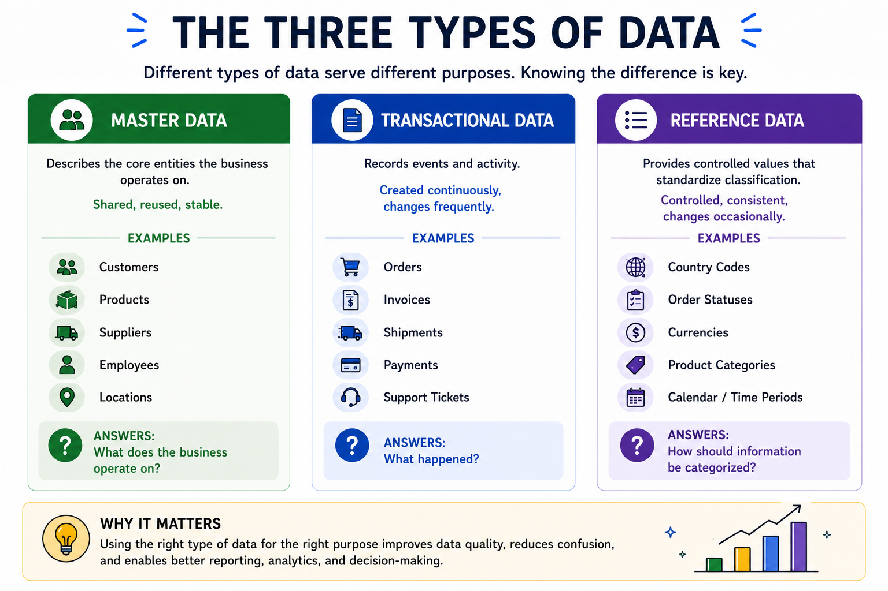
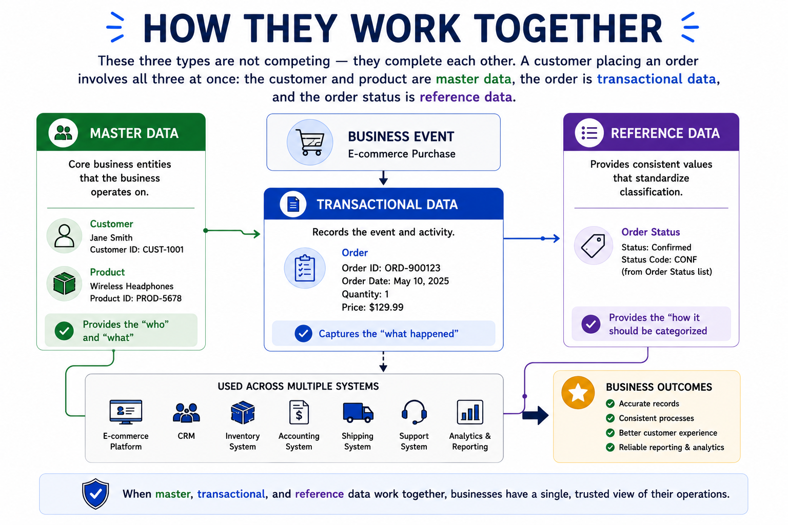

Master Data vs Transactional Data vs Reference Data
Module support notes
Organizations are moving fast to adopt AI — but AI does not understand business context on its own. It learns from data. And if that data is unorganized, inconsistent, or misclassified, the outputs it produces cannot be trusted. That is why understanding data categories is not just a technical exercise. It is the foundation for making AI work reliably in a business environment.
Why this matters for AI
When master data, transactional data, and reference data are well-managed and clearly separated, AI models receive organized, reliable inputs — and the predictions, recommendations, and automations they produce reflect that quality. When they are mixed or inconsistent, AI inherits the problem.
The three categories of enterprise data
Master data is only one category of enterprise data. Organizations manage three distinct types of information, each serving a different purpose and behaving differently across systems.

How they work together
These three types are not competing concepts — they complete each other. A single business event can involve all three at once. A customer placing an order draws on master data for the customer and product, transactional data for the order and payment, and reference data for the order status and shipping method.
When organizations design systems around this structure, processes become cleaner, reporting becomes more reliable, and AI has the organized inputs it needs to produce consistent results.

Tip
When you look at any business process, try identifying which parts are master data, which are transactional, and which are reference data. This mental model will make the topics ahead — governance, quality, and AI readiness — much easier to apply.